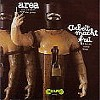
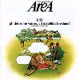
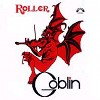
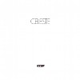
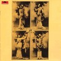
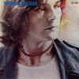
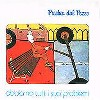

strange music page
progressive? * * * italy
#マウロパガーニの1stとアレア/1978だけ有れば困らないかな？
でもたまにイルバレットディブロンゾが聴きたくなります。
何言ってるんだかわかんない人、ごめんね。イタリア人のプログレのページです。
クラシカルで熱血で楽器の数が多いのが特徴かな？ ELPとGENESISの過剰な部分を更に過激にしたよーな。
基本的にみんな濃ゆいです、キーボード×2 + ギター×2のバンドとか、ロール入りまくりのドラムとか、オーケストラが普通に入ってたりとか・・・何考えてるんだろう？
|
- AREA
- Arti + Mestieri
- Banco Del Mutuo Soccorso
- Celeste
- CHERRY FIVE
- Goblin
- P.F.M.
- Picchio dal Pozzo
- il balletto di bronzo
- Triade
- Mauro Pagani
- New Trolls
- OPUS AVANTRA
- Jacula
|
#前々から買おう買おうと思ってた、アレアの1stです。
この頃はまだジャズよりもロック色の方が強いです。強いですけど変態地中海フレーズを弾きまくってます、1曲目から噴火しまくってます。鼻血でそーなCDってのはこーゆーのを言うのかも知れません、変態ですけどかっちょいいですけど変態です。
全く聴いたことの無い人には何て説明したらイイんだろう？地中海辺りのトラッドのメロディーとジャズ+ロック、それにデメトリオって人の変態ボーカルが縦横無尽に駆け回るテンション高すぎるアルバム。こんな感じ？
プログレファンじゃなくっても、最近のヘンなジャズロックとか好きな人は聴いてみるとイイかも。物凄く好きか、物凄く嫌いかはっきり分かれそう。(2003.4.27)

- Luglio,agosto,settembre (nero) (7月、8月、9月(黒))
- Arbeit macht frei (自由への叫び)
- Consapevolezza (自覚)
- Le labbra del tempo (時間の唇)
- 240 chilometri da Smirne (スミルネから240km)
- L'abbattimento dello Zeppelin (ツェッペリン号の崩壊)
- Demetrio Stratos (voice)
- Patrizio Friselli (piano,electric piano)
- Gianpaolo Tofani (guitars)
- Giulio Capiozzo (drums,percussions)
- Patrick Djivas (bass,contrabass)
- Voctor Edouard Busnello (oboe,clarinet)
CRAMPS RECORDS: CRSCD-001 (original release 1973)
#デメトリオストラトスさん率いるアレアです。でも、出目トリオ(イイ変換だ..)さんはこのアルバムの後に、死んでしまいます。えーと変態イタリアジャズロック。
強烈な個性の有るバンドです。アヴァンギャルドに地中海系のトラッド (なんかバルカン半島の踊りの曲とかが根っこにあるとか) を混ぜ合わせたような。
曲も演奏も非常にテンション高いです、デメトリオが死んでからフツーのジャズロックみたいになってしまう(らしい、未聴) のは非常にもったいない。

- Il Bandito Del Deserto (荒野の追放者)
- Interno Con Figure E Luci (形と光りの中)
- Return From Workuta (ワークータから帰る)
- Guardati Dal Mese Vicino All'Aprie (4月頃から)
- Hommage A Violette Nozieres (精神錯乱)
- Ici On Dance!
- Acrostico In Memoria Di Laio (ライオの記念)
- "fff" (festa, farina e forca)
- Vodka Cola
- Demetrio Stratos (vocals,keyboards)
- Giulio Capiozzo (drums,percussions)
- Patrizio Fariselli (synthesizers)
- Ares Tavolazzi (bass,guitars)
MMG: AMCE-559 (original release 1978)
#フリオ・キリコって人の物凄く手数の多いドラムが特徴的なジャズロック・・・というかフュージョンに近いかな？ドラムがフツーになったら、オシャレな音楽に聴こえなくも無さそうな感じのグループ。イタリアプログレに有りがちな、ものすごく過剰で暑苦しい感じ（まぁそれがイタリアプログレの良さなんだけど）は基本的には無いです。
とにかくドラム、ほとんどロールしてます。手首にバネでも仕込んでるんじゃないだろーか？という。
- Valzer Per Domani
- Mirafiori
- Saper Sentire (知覚そして認識)
- Nove Lune Prima (9つの月の前で)
- Da Nord A Sud (北から南へ)
- Nove Lune Dopo (9つの月の後で)
- Mescal
- Mescalero
- Dimensione Terra (大地の大きさ)
- Aria Pesante (重苦しい空気)
- Consapevolezza Parte 1
- Sagra (祭礼)
- Consapevolezza Parte 2
- Rinuncia (放棄)
- Marilyn
- Terminal (終末)
- Furio Chirico (drums,percussions)
- Beppe Crovella (piano,arp,mellotron,organ)
- Marco Gallesi (bass)
- Gigi Venegoni (guitars,synthesizers)
- Giovanni Vigliar (violin,voice,percussions)
- Arturo Vitale (sax,clarinet,vibraphone)
- Gaza Gianfranco (voice)
KING RECORDS/NEXUS: KICP-2739 (original release 1975 - CRAMPS RECORDS)
#えーと実はこんなマニアなのも聴いてたりします。イタリアンロックの有名どころ、バンコです。これは...2枚目なのかな？基本的にはイタリアプログレらしい、クラシカルなピアノとかの過剰な構築系の音ですけど、この2枚目は(これと次のしか聴いた事無いけど)特にアヴァンギャルドなようです。もーキチガイみたいな前衛さ、今聴くとちょっとキツイです(これ買ったのは高校の頃)次のアルバムの方が好きです。
- L'Evoluzione (革命)
- La Conquista Della Posizione Eretta (征服)
- Danza dei Grandi Rettili (卑劣漢の踊り)
- Cento Mani E Cento Occhi (100の手と100の瞳)
- 750,000 Anni Fa...L'Amore? (75年前の愛)
- Miserere Alla Storia (悲惨な物語)
- Ed Ora Io Domando Tempo Al Tempo Ed Egli mi Risponde...Non Ne Ho (疑問)
- Vittorio Nocenzi (organ,clavinet,synthesizers)
- Gianni Nocenzi (piano,piccolo)
- Marcello Todaro (guitars)
- Renato D'Angelo (bass,contrabass)
- Pier Luigi Calderoni (drums,timpani)
- Francesco Di Giacomo (vocals)
KING RECORDS/CRIME: KICP-2706 (original release 1973)
#バンコの三枚目。前作のアヴァンギャルドな感覚はちょっと抑え目になっていて、落ち着いた(それでも変拍子+ダブルキーボードで、すごいアンサンブルだけど)感じになってます。
「イタリアっぽい音」ってこんな感じかな？とも思います、オススメ。
- Canto Nomade Per Un Prigioniero Politico (政治犯罪者の歌)
- Non Mi Rompete (私を裏切るな)
- La Citta Sottile (小さな街)
- Dopo...Niente E Piu Lo Stesso (消え去りし真実)
- Traccia II (軌跡II)
- Vittorio Nocenzi (organ,synthesizers)
- Gianni Nocenzi (piano,electric piano)
- Marcello Todaro (guitars)
- Renato D'Angelo (bass,acoustic gutitar)
- Pier Luigi Calderoni (drums,percussions)
- Francesco Di Giacomo (vocals)
#思いっきりイギリスっぽいプログレしてます、余りイタリアプログレのくどい所は感じられないです。
で、このバンド実はゴブリンの前身バンドみたいです。
なんだか飛びぬけて素晴らしいって所は無いんですけど、70年代っぽいロックが聴けるので気に入ってます。
イギリスプログレからそのまんまパクって来たよーな箇所も多々有るんですけど、不思議と気にならなかったり。
- Country Grave-Yard (田舎の墓地にて)
- The Picture of Dorian Gray (ドリアングレイの肖像)
- The Swan Is A Murderer Part 1 (白鳥の殺意)
- The Swan Is A Murderer Part 2 (白鳥の殺意)
- Oliver
- My Little Cloud Land (雲の王国)
- Claudio Simonetti
- Massimo Morante
- Carlo Bordini (drums,percussions)
- Tony Tartarini (vocals)
KING RECORDS: KICP-2709 (original release 1975)
#「サスペリア」とかのイタリアホラー映画のサントラで結構有名なグループみたいです、ゴブリン。
このRollerはサントラじゃない数少ないアルバム。基調はジャズロックですけど、ギターだけ野太かったり、もろプログレみたいな曲だったり、南欧っぽい叙情的な曲有ったり・・・ヘンなバンドだなぁ。まぁイタリアらしくていいけど。

- Roller
- Aquaman
- Snip Snap
- Il Risveglio Del Serpente
- Goblin
Dr.Frankenstein
- Claudio Simonetti (clavinet,organ,piano,mini moog)
- Maurizio Guarini (rhodes,moog,piano)
- Agostino Marangolo (drums,percussions)
- Fabio Pignatelli (bass)
- Massimo Morante (guitars)
KING RECORDS: KICP-2865
CINEVOX RECORSD: (1976)

- Principe di Giorno (光明の統治者)
- Favole Antiche (時代の恵み)
- Eftus
- Giochi Nella Notte (夜の瞳)
- La Grande Isola (大いなる島影)
- La Danza Del Fato (運命の舞)
- L'Imbrglio (詐欺)
- Giorgio Battaglia (bass,guitars)
- Leonardo Lagorio (piano,flute,sax,mellotron)
- Ciro Perriono (percussions,flute,mellotron,vocals)
- Mariano Schiavolini (vocals,guitars)
KING RECORDS/CRIME: KICP-2711 (original release 1976 - GROG RECORDS)
#「イルバレットディブロンゾ」と読みます。ジャンニレオーネって人のバンド。
攻撃的なELPみたいなバンドですけど、かっちょいーです。キーボード主体のロックバンドとして、かなりいけてると思います。レ・オルメとかバンコとかより好き。
ちなみに本編よりもボーナストラックのシングル曲の方がかっちょよかったりも。

- Introduzione
- Primo Incontro
- Secondo Incontro
- Terzo Incontro
- Epilogo
- La Tua Casa Comoda (安息の家)
- Donna Vittoria (ヴィットリア婦人)
- Gianni Leone (vocals,piano,organ,mellotron)
- Lino Bjello (guitars)
- Vito Manzari (bass)
- Gianchi Stringa (drums)
POLYDOR: POCP-2368 (original release 1972)
SABAZIO (サバツィオ組曲)
- nascita (誕生)
- il soggio (旅)
- il sogno (夢)
- vita nuova (新しい人生)
- Il Circo
- Espressione (表現力)
- Caro Fratello (親愛なる兄弟へ)
- 1998 (millenovecentonovantotto)
#今ではもうほとんど聴かなくなっちゃった、ユーロロック系のアルバムの中で唯一って言っていいくらい今でもまだ聴くアルバムです。元P.F.M.のM.Paganiのソロアルバムです、1曲目から5拍子のカッチョイイバイオリンで飛ばしまくってますけど、地中海系のトラッド有りのバラエティに富んだアルバムです。南欧系の民族音楽とかと融合した奥深いアルバムで、これはこれは飽きないです。オススメ。

- Europa Minor (ヨーロッパの曙)
- Argiento
- Violer D'Amoures (哀しみのバイオリン)
- La Citta' Aromatica (馨しき街)
- L'Albero Di Canto Part I (木々は歌う)
- Choron
- Il Blu Comincia Davvero (海の調べ)
- L'Albero Di Canto Part II (木々は歌う)
- Mauro Pagani (violin,viola,bouzouki)
- Walter Calloni (percussions on 1.6.)
- Giulio Capiozzo (drums on 1.5.)
- Patrizio Fariselli (piano on 1.5)
- Pasquale Minieri (percussions on 1.)
- Ares Tavolazzi (bass on 1.5.)(contrabass on 5.)
- Giorgio Vivaldi (percussions on 1.6.)
- Mario Arcari (oboe on 2.)
- Teressa De Sio (voice on 2.)
- Roberto Colombo (polymoog on 4.)
- Patrick Djivas (bass on 4.)
- Franco Mussida (guitars on 4.)
- Demetrio Stratos (voice on 5.8.)
- Luca Balbo (guitars on 7.)
WARNER MUSIC JAPAN/MMG: AMCE-557 (original release 1978 - CGD)
concerto grosso per.1
- Allegro
- Adagio (shadows)
- Cadenza - Andante Con Moto
- Shadows (per Jimmy Hendrix)
- Nella Sala Vuota (空間の中から)
- La Prima Goccia Bagna Il Viso Part 1
- La Prima Goccia Bagna Il Viso Part 2
KING RECORDS/CRIME: KICP-2152 (original release 1971)
- Concerto Grosso N.2
- Vivace
- Andante (Most dear lady)
- Moderato (Fare you well dove)
- Quiet seas
- Bella come mai
- Let it be
- Le roi soleil
- Vento o Cent'anni
#イタリアで前衛っぽいです。何が近いかな〜？ ZNRとか....こんなマイナーな喩え行ってもしょうがないですね。
室内楽とアヴァンギャルドを掛け合わせたよーなレコードです。G.Bisotto = コンセプト, A.Tisocco = 音楽, D.Monaco = 歌 って訳みたいです。
ロックの人がクラシックや前衛を演奏してるんじゃなくて、クラシックの人がロック/ポップの方法を実験してみたよな印象。わかんない部分は多々あるけど、6曲目とかただただ綺麗っていうか優雅っつーか。
- Introspezione
- Les Plaisirs Sont Loux
- La Marmerlatta
- L'Altalena
- Monologo
- Il Pavone
- Ah, Douleur
- Deliee
- Oro
- Rituale
- Introspezione (Integrale)
- Giorgio Bisotto (composition)
- Donella Del Monaco (vocals)
- Alfredo Tisocco (piano,composition)
- Luciano Tavella (flute)
- Enrico Professione (violin)
- Pieregidio Spiller (violin)
- Riccardo Perraro (cello)
- Pierdino Tisato (drums)
- Tony Esposito (percussions)
ARTIS RECORDS: ARCD-002 (original release 1974)
#
生まれて初めて買った新品の洋楽のCDはコレです。なんだかもーどんなマニアだよ？みたいな。
えー P.F.M. = プレミアータ・フォルネリア・マルコーニ です。なかなか覚えられませんでした、覚えても何もイイ事無いですけど。
これは全米デビューのCD、キングクリムゾンのピートシンフィールドが目をつけてプロデュースしたらしいです。
なんだかアメリカナイズされちゃったよう感じがするので、私は1st/2nd/4thが好きです。でも、イタリアロック入門にはちょうどいいのかも。
- River of Life
- Celebration
- Photos of Ghost (幻の映像)
- Old Rain
- Il Banchetto (晩餐会の三人の客)
- Mr.9 'till 5
- Promenade The Puzzle
- Flavio Premori (keyboards,vocals)
- Franz di Cioccio (drums,vocals)
- Giorgio Piazza (bass)
- Franco Mussida (guitars,vocals)
- Mauro Pagani (violin,woodwind)
KING RECORDS: KICP-88 (original release 1972)
#実は上のよりも好きなPFMの4枚目、マンティコアから出た2枚目になるのかな？
前作が割とイタリアっぽくなかったけど、こっちは何だかとてもイタリアな感じ・・・かも。
- L'isola di niente (幻の島)
- Is My Face on Straight (困惑)
- La luna nuova (新月)
- Dolcissia Maria
- Via Lumiere (ルミエール通り)
- Flavio Premori (keyboards,vocals)
- Franz di Cioccio (drums,vocals)
- Jan Patrick Djivas (bass,vocals)
- Franco Mussida (guitars,vocals)
- Mauro Pagani (violin,woodwind)
KING RECORDS/CRIME: KICP-2702 (original release 1974)
#イタリアにしては珍しくカンタベリー・・・というかチェンバーロックみたいな感じのグループ。「ピッキオダルポッツォ」って読むみたいです。
グループとしてはこれが80年発表の2nd。他は76年の1stと、未発表音源をまとめたCDが出てるみたいです。
うーん、早すぎたとしか言いようが無いのかなー。Doctor NerveとかX-Legged Sallyに良く似てます、6曲目なんて変拍子だらけで
P.O.N.みたい。(2003.1.6)

- La sgargianza parte I
- I problemi di Ferdinand P.
- La sgargianza parte II
- Moderno Ballabile (現代舞踏曲)
- La sgargianza parte III e IV
- Strativari
- Mattiamo il cazo che... (不確定事象)
- Uccellin del basco (森の物語)
- Andrea Beccari (bass,horn,percussions,voice)
- Aldo De Scalzi (keyboards,percussions,voice)
- Paolo Griguolo (guitars,percussions,voice)
- Aldo Di Marco (drums,vibraphone)
- Robert Romani (tenor sax,flute)
- Robert Bologna (guitars)
KING RECORDS/NEXUS: KICP-2841 (original release 1980)
#このJaculaの中心人物のA.Bartocettiは黒ミサとかにハマっていた人物らしいです。で、アルバムの内容ですがそのまんまミサ風の教会オルガンが響き渡って陰鬱な女性ボーカルが乗る、極めてネクラなアルバムです。ほんとに暗いですヤバイです、車に入れておいて常にドライブの時にこれをかけるようにしておけば友達の90%は居なくなると思います、その前に自分が鬱病になるかもしんないですけど。なんだかサブリミナルっぽい効果音の入った3曲目とか、暗いフルートにのせて謎の語りが入る4曲目なんてユリゲラーのレコードにも通じるヤバさです。
- U.F.D.E.M.
- Praesentia Domini
- Jacula Valzer
- Long Black Magic Night
- In Old Castle
produced by Anthony Bartocetti
- Anthony Bartocetti (guitars,bass,vocals)
- Charles Tiring (organ,harpsichord,moog,vocals)
- Fiamma Dello Spirito (voclas,violin,flute)
- Franz parthenzy (medium)
MELLOW RECORDS: MMP-136 (original release 1975)